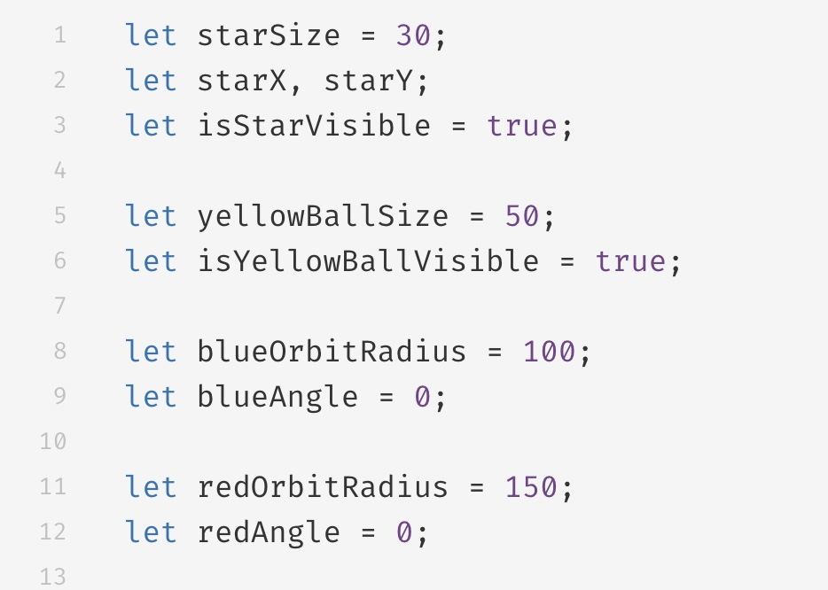
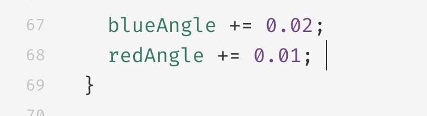

Week 5 Time and oscillation
I start by setting the size, and color of each shapes.

Draws the star shape on the canvas.

Draw yellow, blue, and red spheres on the canvas and determine their positions.

Update the angle of the blue and red spheres to create a looping effect and control the speed.

Randomly generate the position of the star and toggle the visibility of the star
 Click me to see the outcome!
Click me to see the outcome!